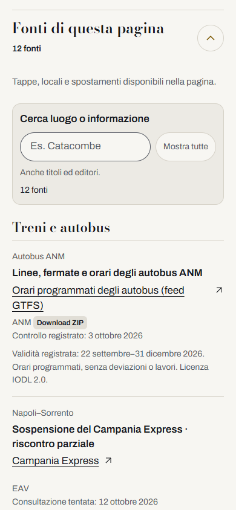
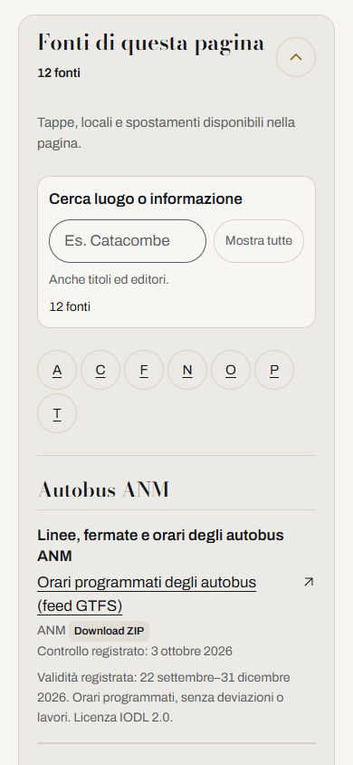
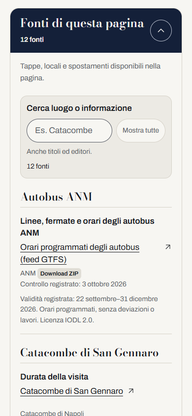
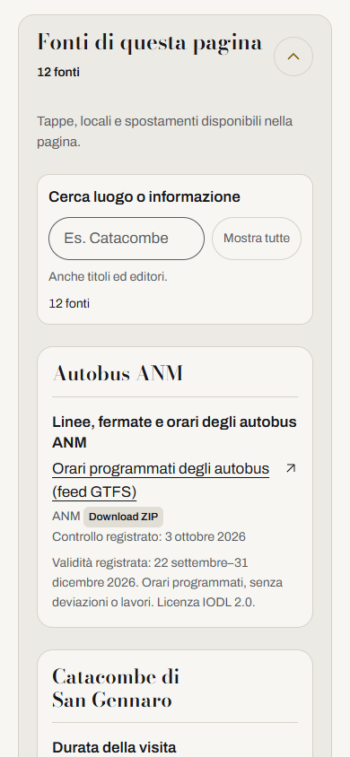

Le quattro alternative rifinite.
A · Lista essenziale

La più sobria. Il luogo è nel margine sul desktop e nella voce sul telefono.
B · Percorso per luoghi

La più orientata alla consultazione di molte tappe, senza un secondo elenco di tutti i luoghi.
C · Informazione e fonte

Consigliata: lo scopo guida la lettura, il luogo dà contesto e l’originale è a un clic.
D · Fogli di viaggio

La più editoriale per pagine brevi; mantiene più spazio tra i luoghi.